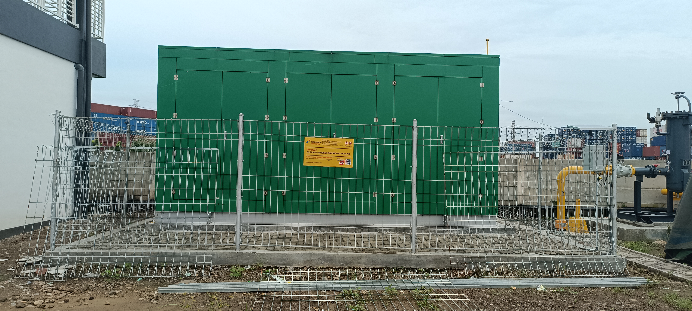
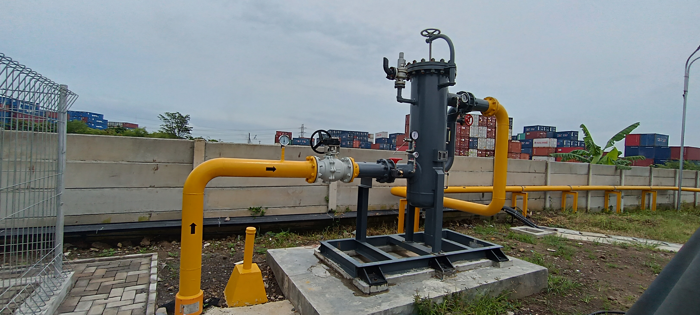
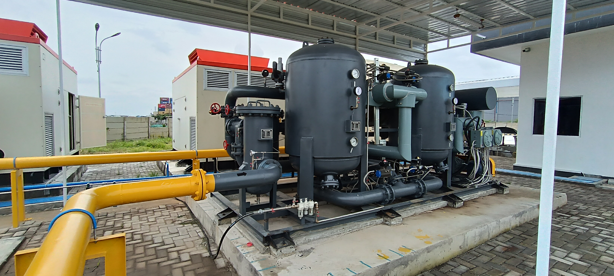
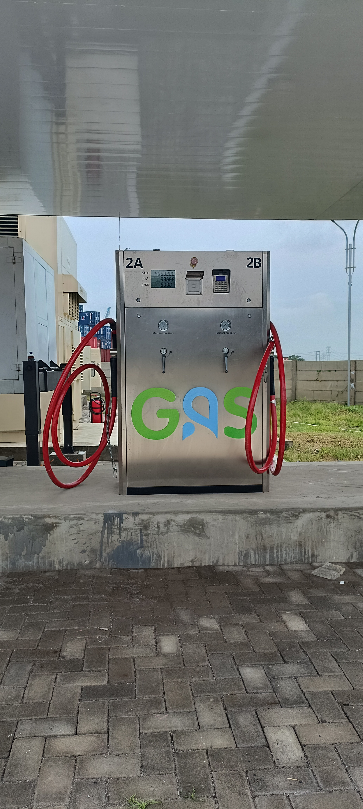

Alur Kerja Mother Station

1
MRS
Sumber Gas : Pipa Transmisi Gas Nasional (PGN)

2
SCRUBBER
Fungsi : Menangkap aerosol dan partikel yang mungkin terbawa aliran gas.

3
DRYER
Fungsi : Menurunkan kadar air / mouisture content dari aliran gas.

4
CNG COMPRESOR
Fungsi : Memapatkan/Mengcompress gas bumi dari tekanan pipa ( < 10 bar) hingga tekanan ± 250 bar

5
Dispenser
Fungsi : Menyalurkan, Mengontrol tekanan, dan Mengukur jumlah CNG yang diisikan ke GTM (Gas Transport Module)

6
Armada CNG
Memperbarui konten, memantau error, meningkatkan performa, dan menjaga backup.